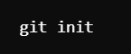
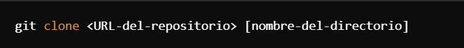
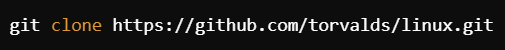

EARM
Enrique Alonso Ruvalcaba Marinez
Que es GitHub?
GitHub es una plataforma que se encuentra en linea y sirve para alojar,gestionar y colaborar en proyectos de softwaare utilizando Git. Pero ahora surge otra pregunta y que es Git?, pues Git es un sistema de control de versiones distribuido que es un complemento muy importante de GitHub y permite a los desarrolladores gestionar sus tiempos y rastrear cualquier tipo de cambio en su codigo fuente de una manera muy eficiente.
Para que sirve?
Como GitHub es una plataforma en la nuve que permite almacenar repositoris Git, facilitando la colaboracion en proyectos de software. Pero uno de los beneficios de usa GitHub son:
- Almacenamiento en la nube: Tu codigo estara diponibles 24/7 en cualquier lugar donde tengas acceso aa internet y a una computadora.
- Colaboracion: Puedes trabajas con cualquier persona o desarrollador en algun proyecto que tengan en comun.
- Pull Request: Permite revisar y revisar si apruebas o no el codigo de tu compañero antes de de fusionar el codigo completo.
- Automatizacion con GitHub Actions: GitHub ejecuta pruebas y despliegues automaticos.
- Issues y proyectos: GitHub cuenta con una gran canridad de herramientas para gestionar tu tiempo, tareas y tambien para reportar cualquier error en el codigo
Los comandos mas importantes de GitHub(Git):
git init
Este comando es utilizado para inicializar un nuevo reposirtorio Git en un directorio vacio o en un
qdirectorio existenete que aun no este siendo rastreado por Git.
Sintaxis:

Ejemplo de como utilizarlo:

git clone:
Este comando se utiliza para crear una copia exacta de un repositorio Git ya existenete
en un servidor remoto y asi poder descargarlo en tu computadora local. Tambien al clonar
el repositorio obtienes un historial completo de cambios, ramas y archivos del proyecto.
Sintaxis:
 [nombre-del-directorio]"
height="50px" width="500px">
Ejemplo de como utilizarlo:

git add:
Este comando es utilizado para agregar cambios realizados en archivos específicos o en
todos los archivos modificados al área de preparación (staging area) en Git.
Sintaxis:
Ejemplo de como utilizarlo:
git commit:
Este comando se utiliza para guardar de manera permanente los cambios que han sido
previamente agregados al área de preparación (staging area) en Git. Un commit representa
un registro inmutable de los cambios realizados en los archivos del proyecto, en un momento específico.
Sintaxis:
Ejemplo de como utilizarlo:
git status:
Este comando es una herramienta muy importante y usada ya que nos muestra el estado actual del repositorio en una maquina local.
Proporciona información sobre los cambios realizados en los archivos, las ramas actuales y otra información relevante sobre el
estado del repositorio.
Sintaxis:
Ejemplo de como utilizarlo:
git log:
Este comando se utiliza para mostrar el historial completo de commits realizados en un repositorio Git.
Al ejecutar git log, obtendrás una lista cronológica de todos los commits realizados, lo que te permite ver
quién hizo los cambios, cuándo se realizaron y los mensajes asociados a cada commit.
Sintaxis:
Ejemplo de como utilizarlo:
git pull:
Este comanso se utiliza para descargar y fusionar los cambios desde un repositorio remoto a tu repositorio local.
Sintaxis:
Ejemplo de como utilizarlo:
git push:
Este comando se utiliza para enviar los commits locales de tu repositorio a un repositorio remoto.
Después de realizar cambios y commits en tu repositorio local
Sintaxis:
Ejemplo de como utilizarlo:
git branch:
Este comando se utiliza para mostrar una lista de todas las ramas presentes en el repositorio. Una rama en Git
es simplemente una línea independiente de desarrollo que permite trabajar en diferentes características o
versiones del proyecto
Sintaxis:
Ejemplo de como utilizarlo: